Équipe
Des étudiant·e·s, des stagiaires et du personnel de recherche en psychologie, en neurosciences et en informatique.
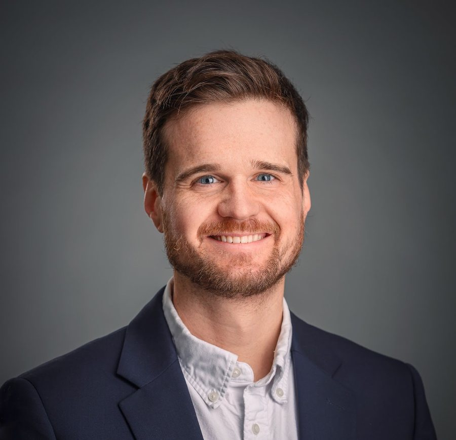
Michel-Pierre Coll
Professeur agrégéÉcole de psychologie, Université Laval
ChercheurCentre interdisciplinaire de recherche en réadaptation et intégration sociale (Cirris)
Expérience professionnelle et formation
- 2019–2021Stagiaire postdoctoral, Université McGill
- 2016–2019Stagiaire postdoctoral, Université d'Oxford
- 2009–2016Ph. D. Neuropsychologie clinique, Université Laval
Étudiant·e·s et stagiaires postdoctoraux·ales
Léane Beaulieu-Laliberté
M.A. Psychologie 2022–2024
D.Psy. 2024–Discrimination de la douleur lors de la modulation endogène
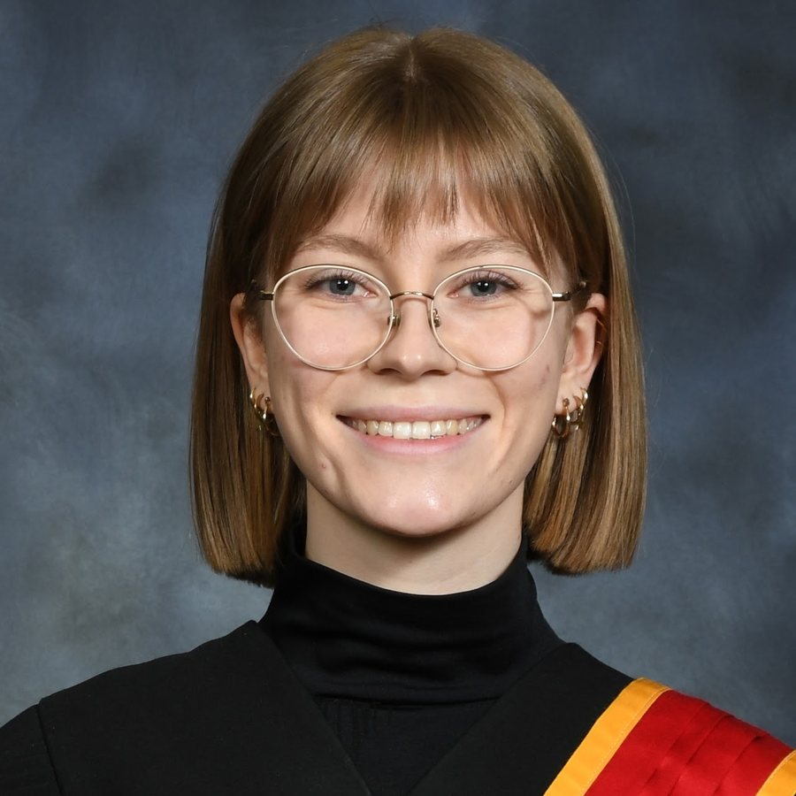
Alyson Champagne
Ph. D. Psychologie clinique 2022–
Décodage de l'intensité subjective de la douleur à partir de l'activité cérébrale
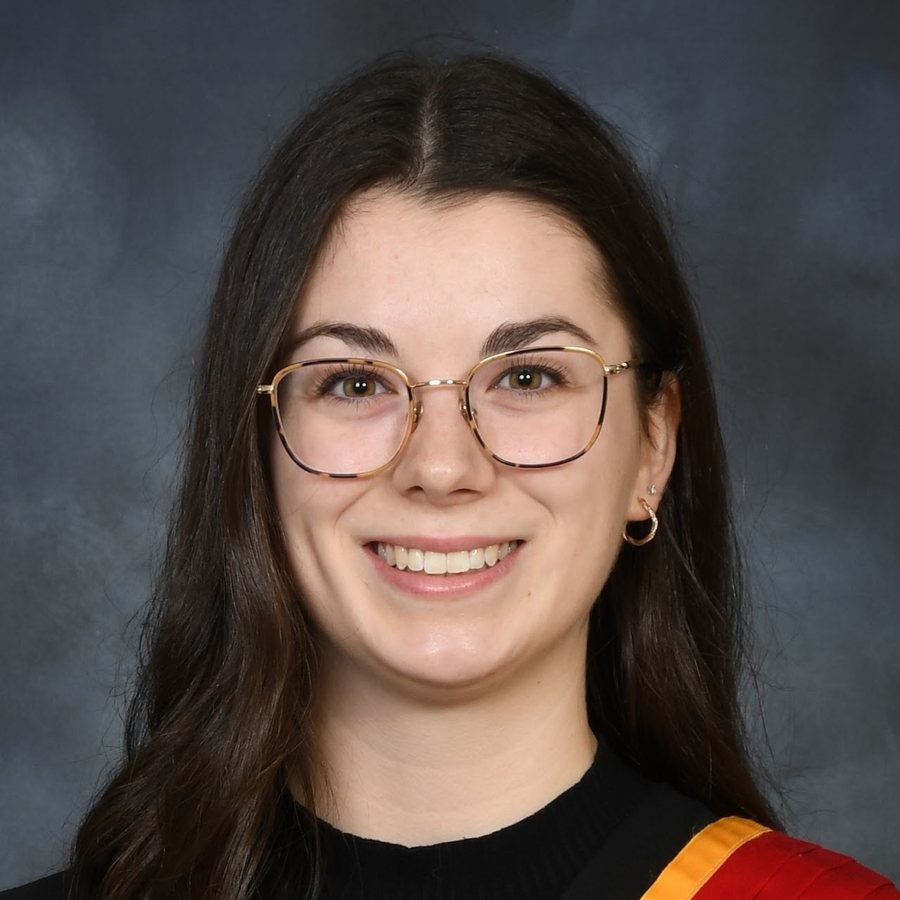
Mégane Lacombe-Thibault
Ph. D. Psychologie clinique 2022–
Vers une compréhension computationnelle de la douleur chronique
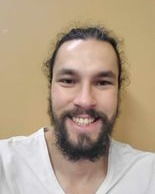
Nicolas Roy
Professionnel de recherche 2023–2024
Ph. D. Psychologie clinique 2024–Modélisation computationnelle du traitement cérébral de la douleur dans le contexte du dilemme d'exploration et d'exploitation
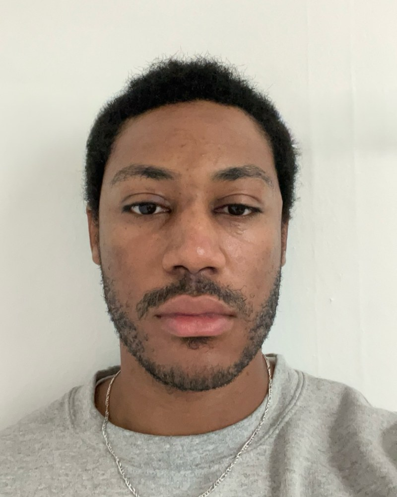
Sanoussy Diallo
D.Psy. 2024–
Modélisation bayésienne de l'inférence sensorielle de la douleur en contexte d'incertitude
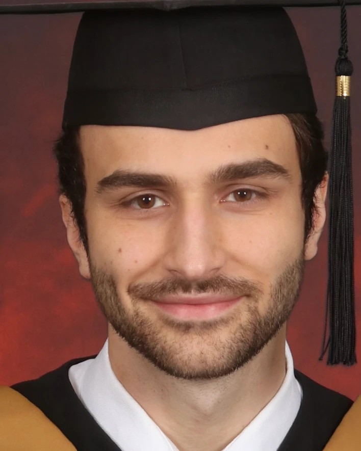
Joshua Duquette
Auxiliaire de recherche 2025
Ph. D. Psychologie clinique 2025–Prédiction des signatures neuronales de la douleur à partir des oscillations EEG
Shima Hassanpour
Stagiaire postdoctorale 2026–
Réseaux corticaux de la douleur
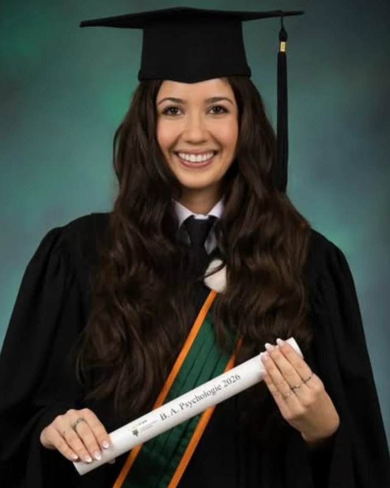
Laurie Caumartin
M. Sc. Neurosciences 2026–
Codirection : Mathieu LandryDissocier le rôle de l'attention et des attentes dans la perception de la douleur
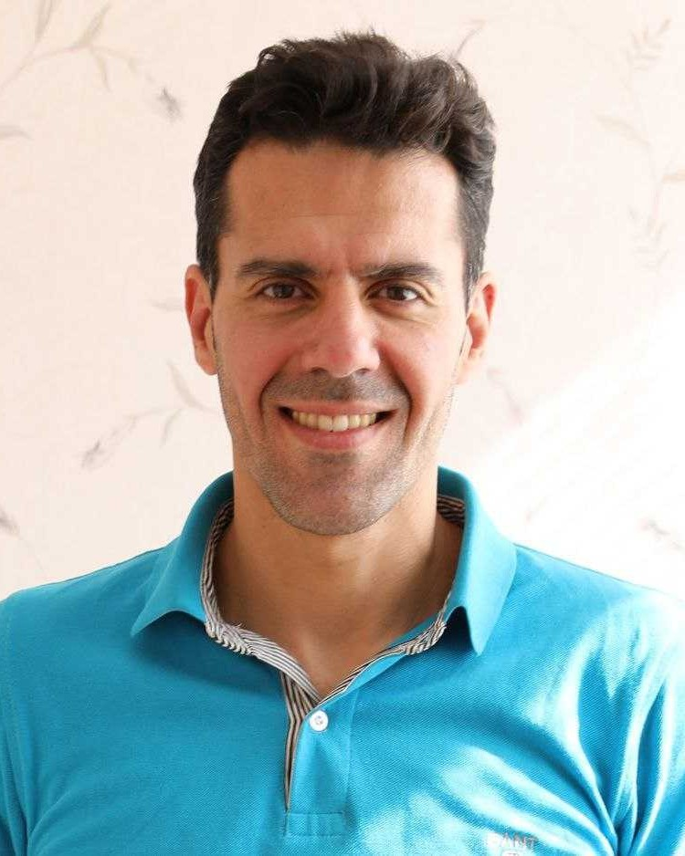
Pouya Rabiei
Ph. D. Sciences biomédicales
Codirection : Hugo Massé-AlariePrédiction de la transition vers la douleur chronique : étude des variables comportementales et neuronales
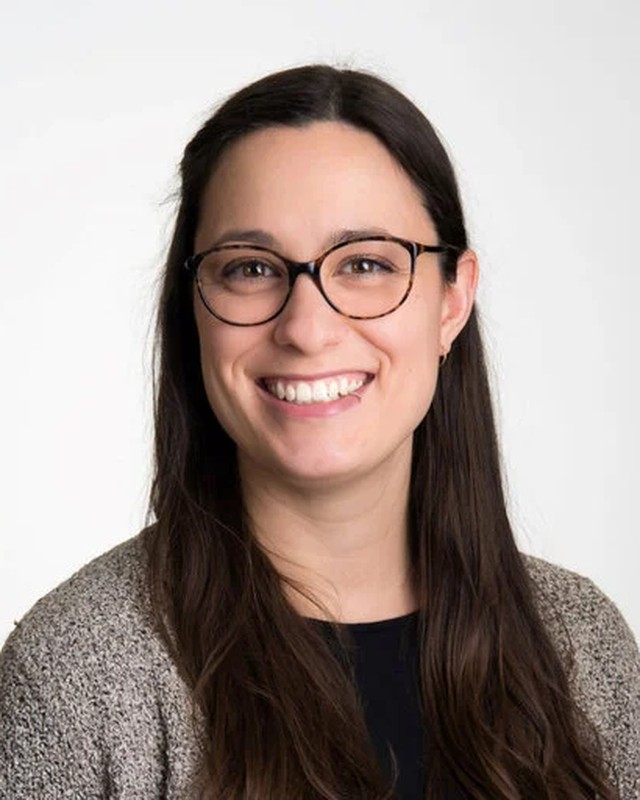
Audrey Lalancette
Ph. D. Sciences de la réadaptation
Codirection : Maximiliano WilsonTraitement phonologique au cours du vieillissement : données issues de l'EEG
Personnel de recherche
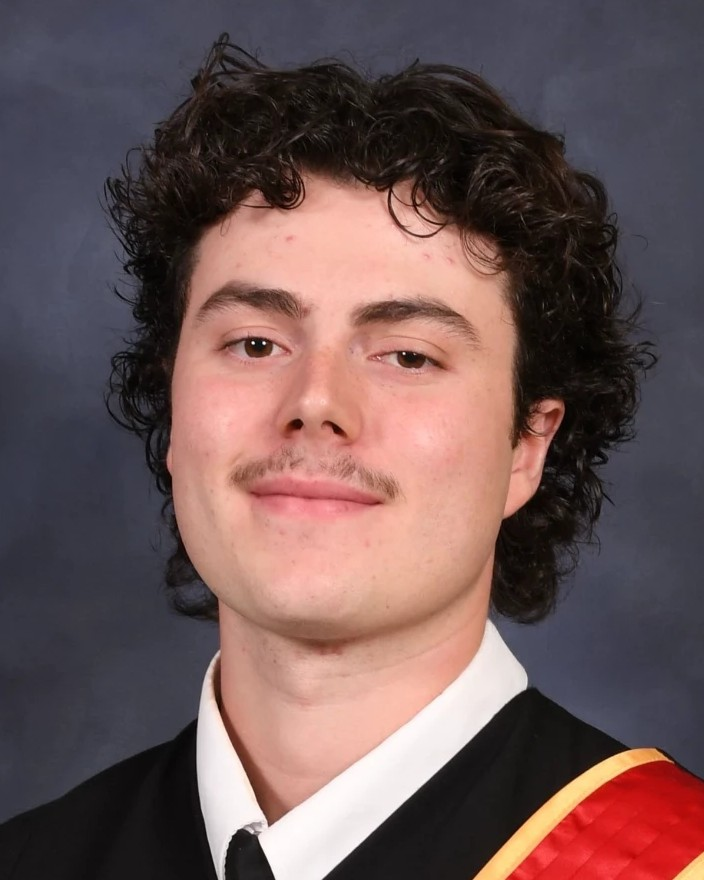
Antoine Cyr-Bouchard
Professionnel de recherche 2026–
Auxiliaire de recherche 2023–2025
Ph. D. Psychologie clinique A2025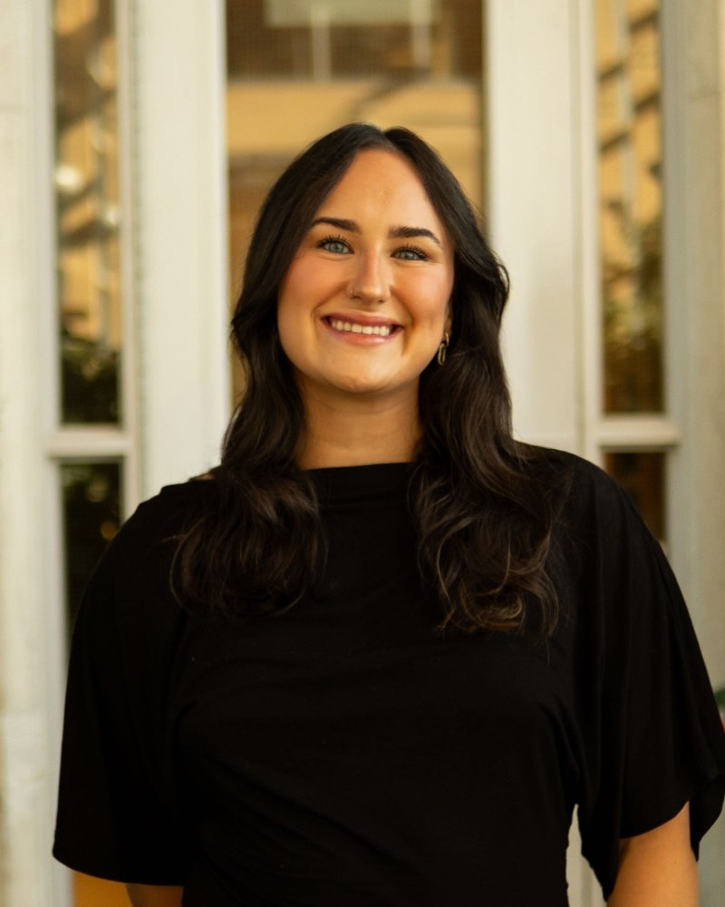
Lorie-Ève Barrette
Auxiliaire de recherche 2025–
Baccalauréat en psychologie 2024–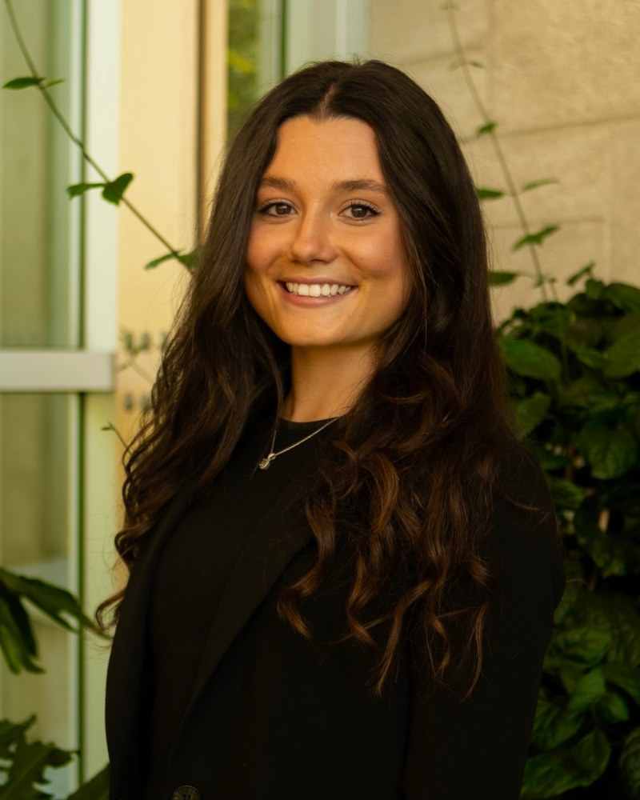
Alysun Paradis
Auxiliaire de recherche 2026–
Baccalauréat en psychologie 2025–
Anciens membres du laboratoire
Afficher les 11 entrées
- Marie-Hélène TessierProfessionnelle de recherche 2026
- Samuel Lépine, Marie-Joëlle Tremblay et Jérôme VerretRD 2025–2026 ; Différences individuelles et perception de la douleur
- Mathis RezzoukM. Sc. Informatique (codirection Cem Subakan) 2024–2026 ; Apprentissage profond et EEG
- Amandine DaigneyProfessionnelle de recherche 2025–2026
- Pénélope Alain-Thériault et Aurélie TremblayRD 2024–2025 ; Influence de la fatigue mentale sur l'apprentissage et la perception de la douleur
- Veronika WendlerStagiaire MITACS (Université d'Aberdeen, Royaume-Uni) 2024
- Jacob Schink, Laurence Lagadec-Gaulin et Mégane DéryRD 2023–2024 ; Placebo et discrimination
- Rachel FortinAuxiliaire de recherche 2023–2024
- Mathilda BuschmannStagiaire d'été en visite (Université d'Osnabrück, Allemagne) 2023 ; EEG et apprentissage profond
- Mélanie LachanceAuxiliaire de recherche 2022–2023
- Audrey Etcheverry, Thaliane Côté-Cazes et Coralie DeslauriersRD 2022–2023 ; Effet d'une stimulation rythmique visuelle sur la perception de la douleur